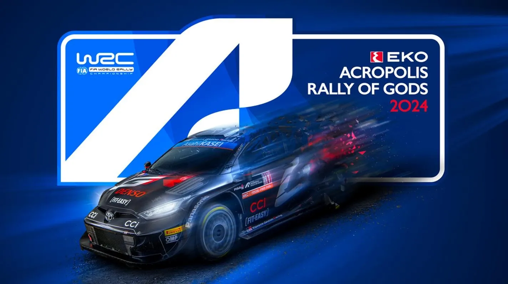
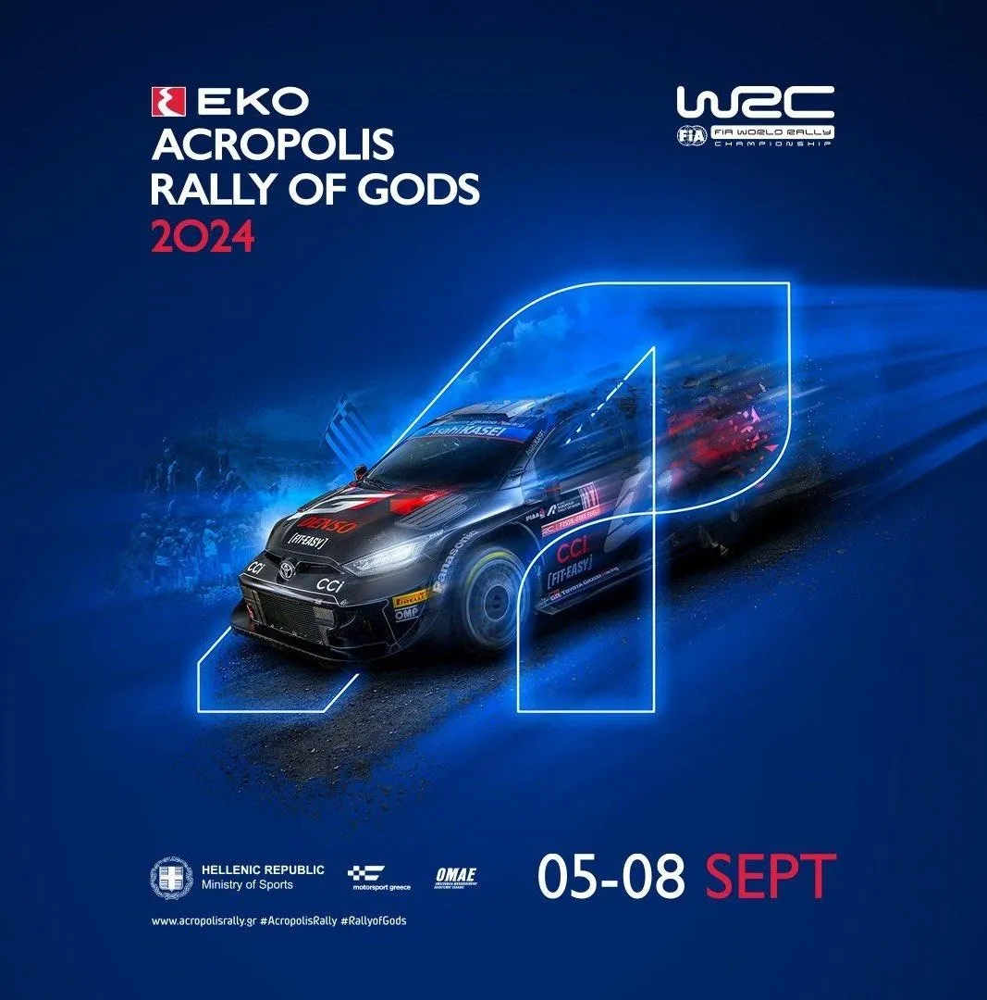
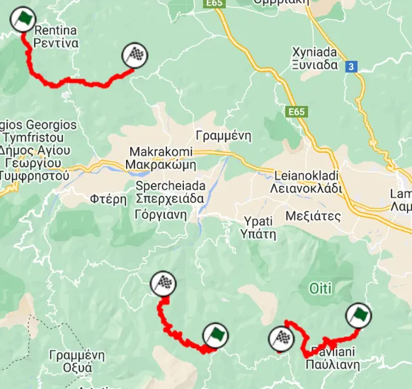

Ανάλυση της διαδρομής του φετινού Ράλλυ Ακρόπολις
Το ωράριο του φετινού Ακρόπολις ανακοιν΄ωθηκε, και υπάρχουν κάποιες εκπλήξεις! Το Ακρόπολις φέτος θα έχει σημαντικές διαφορές σε σχέση με τα προηγούμενα 3 έτη. Φέτος λείπουν από τον εθνικό μας αγώνα οι Καρούτες/Βωξίτες!

Το ράλλυ θα ξεκινήσει από τη Λαμία αντί για την Αθήνα, με την πρώτη μέρα να είναι γύρω από τη Λαμία. Η δεύτερη μέρα του ράλλυ είναι διαφορετική, καθώς τα πληρώματα θα πρέπει να κατέβουν στο Λουτράκι, όπου θα υπάρχει και μια Super Special Stage στο τέλος της ημέρας. Η Κυριακή είναι η συνηθισμένη, με 3 ειδικές διαδρομές κοντά στη Λαμία, η μία επαναλαμβανόμενη. Αυτή είναι η ουσία, αλλά ας ρίξουμε μια πιο προσεκτική ματιά στη διαδρομή, καθώς και στις νέες ειδικές διαδρομές που υπάρχουν στην φετινή έκδοση του εθνικού μας αγώνα.
Η Πέμπτη έχει απλά το shakedown. Επίσημη ονομασία δεν υπάρχει ακόμα, αλλά βάσει των χιλιομέτρων, κατά πάσα πιθανότητα είναι η Λυγαριά, που ΄ήταν και το shakedown πέρσι και πρόπερσι.
Την Παρασκευή, υπάρχουν κάποια καινούρια "καλούδια". Η ΕΔ 1/4 Άνω Παύλιανη είναι νέα, και επιλέχθηκε στη θέση της κλασικής Παύλιανης, λόγω των προβλημάτων που υπήρξαν κατά το περσινό recce, όπου η λάσπη δυσκόλεψε τα πληρώματα. Εκτιμώ ότι θα ακολουθήσει την ίδια διαδρομή με την ειδική Κουμαρίτσι του 2005, με τον δρόμο να ενώνεται με την κλασική διαδρομή της Παύλιανης περίπου στα 7χλμ, με τον τερματισμό να είναι κοντά στην εκκίνηση της κλασικής Παύλιανης, και όχι στο Μαυρολιθάρι. Η ΕΔ 2/5 Δάφνη ακούγεται σαν νέα ειδική, αλλά στην πραγματικότητα είναι απλά το δεύτερο μισό του Πύργου που χρησιμοποιήθηκε το 2021 και το 2022! Η ΕΔ 3/6 είναι ο θρυλικός Ταρζάν, που χρησιμοποιείται την Παρασκευή, στην πρώτη μέρα του ράλλυ, για πρώτη φορά!

Εκτίμηση των διαδρομών της Παρασκευής
Το Σάββατο είναι λίγο περίεργο. Έχει παρόμοιο φόρματ με τις Παρασκευές από το 2021, αλλά αντίστροφα. Η ΕΔ 7 Ρεγγίνι κατά πάση πιθανότητα είναι η περσινή Ελάτεια, αλλά με αντίστροφη φορά, δηλαδή με την ειδική να ξεκινά από το Ρεγγίνι και να τερματίζει στην Ελάτεια. Η ΕΔ 8 είναι η Θήβα, που επιστρέφει μετά από 2 χρόνια απουσίας. Στη συνέχεια τα πληρώματα παίρνουν το δρόμο για το Λουτράκι για την ΕΔ 9/11 Άγιοι Θεόδωροι και την ΕΔ 10 Λουτράκι. Οι Άγιοι Θεόδωροι επιστρέφουν και πάλι μετά από απουσία δύο ετών, και πιθανότατα θα χρησιμοποιήσουν την αρχή της ομώνυμης ειδικής του 2021, αλλά μετά, δεν είμαι σίγουρος. Υποψιάζομαι ότι θα μπορούσε να είναι ένας συνδυασμός της ειδικής των Αγίων Θεοδώρων και της ειδικής Λουτράκι από το 2021. Όσο για το Λουτράκι... δεν έχω ιδέα. Ίσως ένας συνδυασμός από το Χαρβάτι και τα Πίσσια από πέρσι και πρόπερσι; Αυτό φαίνεται σαν μια πολύ καλή εκτίμηση με βάση τα χιλιόμετρα, αλλά είναι απλά μια εικασία. Θα ξέρουμε πώς θα μοιάζουν αυτές οι διαδρομές όταν βγουν οι χάρτες του Ράλλυ Κορίνθου, που λογικά θα χρησιμοποιούν αυτές τις δύο ειδικές. Η ημέρα ολοκληρώνεται με μία υπερειδική. Δεν θέλω καν να ξέρω τι θα είναι αυτό...
Η Κυριακή είναι πιο απλή. Η ΕΔ 13, το Οινοχώρι, αρχικά νόμιζα ότι ήταν η ειδική Στρόμη αλλά με αντίστροφη φορά, αλλά είναι μία ολοκαίνουρια ειδική που δεν ε΄χει ξαναχρησιμοποιηθεί στο Ακρόπολις! Η ΕΔ 14/15 είναι το Ελευθεροχώρι, μια από τις καλύτερες διαδρομές του ράλι, που θα είναι και η Power Stage, όπως ακριβώς ήταν και το 2022.
Ο Παύλος Αθανασούλας μίλησε για εξέλιξη της διαδρομής, όχι για επανάσταση, αλλά για μένα φαίνεται ότι πρόκειται περισσότερο για το δεύτερο. Δεν είμαι φαν του φορμάτ που έχει το Σάββατο, καθώς δημιουργεί περιττές "απλές". Το Σάββατο κάνει επίσης τη ζωή δύσκολη για τους θεατές,γιατί όποιος είχε σκοπό να πάει και στις 3 μέρες, τότε δυστυχώς θα δινοπαθήσει με τα ανέβα-κατέβα από Λαμία σε Λουτράκι, και πάλι Λαμία... Είμαι επίσης λίγο απογοητευμένος που η Λιβαδειά και οι Βωξίτες/Καρούτες δεν θα είναι φέτος στο Ακρόπολις, καθώς ήταν δύο από τις αγαπημένες μου ειδικές πέρυσι. Η Θήβα επέστρεψε αντί της πρώτης, που είναι... οκ, υποθέτω, αλλά όχι καλύτερη από τη Λιβαδειά κατά τη γνώμη μου. Ανυπομονώ όμως να δω την Άνω Παύλιανη και το Οινοχώρι!
Δημήτρης Θεοδώρου

Comments